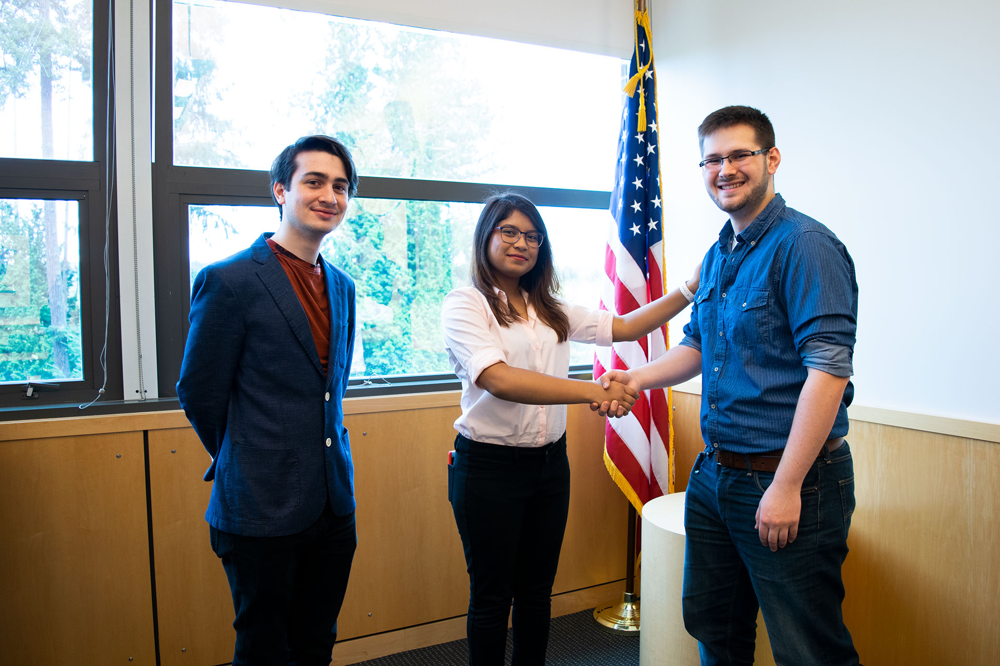
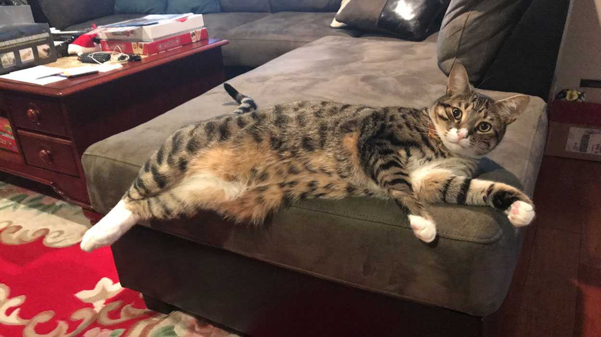

05/05/2018 07:11 AM by Coleen Smith
Imdy town officials have released the name of the 25 year old man found dead at the bottom of Crow Squares staircase yesterday morning. Tobias Kowalski, a federal agent who had just recently arrived in Imdy, was found by a local miner around 6:23am yesterday morning. The miner, who wants to remain anonymous for safety, had this to say:
It's all kind of surreal you know? Imdy is a peaceful town, I don’t think we have had a violent crime like this in years
When asked about finding the body, he said
I had nothing to do with it, I was just walking to the mine, like I do every morning. I came up the path and saw him lying there, I ran over and checked for a pulse, but he was bruised up and bloody from the fall, I knew he was gone.
Local police Chief Mejia was on the scene within five minutes, and secured the site. Few details on what exactly happened have surface, when asked if their was foul play at hand, Chief Mejia stated:
It is possible he fell, but highly unlikely. As for foul play, we know this was not a mugging or a robbery, because the victim still had his wallet on him when he was found. However, there are some mysterious findings about the case, that we will continue to investigate. As you all know, the victim was here investigation the recent environmental troubles. Rest assured, I and the rest of the Imdy police department will get to the bottom of this.
Was Tobias Kowalski murdered? Or was it just a case of coincidence? All we know for now is that a recent federal agent has lost their life, and the town of Imdy is on edge. We will keep everyone updated with any new info we find.
A go-fund me page was set up for the Kowalski’s family.
04/29/2018 03:21 PM
Mason Boulevard will be closed down from 9 PM, 04/30/2018 to 5 AM, 04/30/2018 for contrusction.
04/28/2018 12:07 PM by Coleen Smith
Town of Imdy’s Mayor, Esha Sharma, and Agent S, a corporate auditor from the nearby Establishment Mining Corp., took place in the Imdy town hall. The meeting was over the new agreement signed by the mayor, to now allow Establishment Mining Corp. to start dumping mining waste into the Snoqualmie river; the local river next to Imdy. The agreement includes how the mining company must monitor the health of the river, and update the mayor with monthly reports, as to deter any potential harm to the river and fish that reside inside of it.
Agent S has assured the mayor, and the town of Imdy, that the utmost precautions and care will be taken as they release the waste into the river, and have committed to keeping the environment in the forefront of every action they take. Agent S also had a comment on their most recent court case, where another local town had sued Establishment Mining Corp. because of lead being leached into their well water, she states that
The investigation is ongoing, and there has not been enough solid evidence to indict us in any type of wrongdoing. Rest assured that we always are trying to find better and safer ways to dispose of our waste, and our own spill investigation team is gathering evidence for the next case.
As you can see, the company is serious about any allegations, when it comes to environmental atrocities. The townspeople of Imdy should sleep sound tonight, knowing that their river is in the care of a corporation that takes the environment seriously, and is committed to protecting our water source.
04/23/2018 04:47 PM by Coleen Smith and Schuler Li
The small town of Imdy is a quiet peaceful town, but one day a year that idea is completely challenged, as all the townspeople become Kale crazy! The local kale festival has been a tradition in Imdy for over 100 years as the first kale farmers in the US established there homesteads in the fertile valleys around the Cascades.
Local kale farmer Jim Morgan is the most well-known kale farmer around town. Not only that he is famous for his fresh and fragrant kale, his homemade kale chips are always the top seller at the market. A local told the reporter:
The chips are healthy and delicious! Best snacks for the kids!
Last year, Morgan’s special “Big Stack Cheese Kale Bread” won the 2017 Annual Kale Fest Award. Morgan told the reporter:
I think I got lucky last year, I was just experimenting and it actually turned out great! I am excited to see what kind of wits do people put in for kale this year!
As usual, this year’s Kale Festival will be hosted at Farmers Market starting from 10 AM to 7 PM on April 24th. Many local kale farmers will be showcasing their best harvest and kale dishes. There are also new family-fun games in the festival. Come enjoy the delicious food, drinks, entertainments and music!
04/23/2018 03:00 PM by Schuler Li
Federal EPA Auditor Tobias Kowalski arrived town Imdy few days ago. Auditor Kowalski said that his main purpose of the visit is to perform an investigation on the water quality of Town Imdy. Many town citizens speculated that Establishment Mining Corp. is the major cause of the water contamination. Kolwaski told the reporter:
There has been reports filed to our organization recently regarding possible water pollutions here, hopefully my investigation will help resolve the problems.
Mayor Sharma stated that Town Imdy needs the investigation to clear up rumors that have been sparked up recently,
We hope Auditor Kolwaski will help us resolve the rumors and concerns going around Town Imdy with his investigations.
Auditor Kowalski will be working closely with Establishment Mining Corporate Auditor Agent S for the investigation. All sides claim that their ultimate goal is to provide a healthy environment for Town Imdy and the citizens. Auditor Kowalski said that he will not disclose any detail information regarding the investigation during the process until he finishes report and files it to the Federal EPA.
Other than work, I am excited to explore around Imdy, this is a beautiful, lovely town. Can’t wait for Kale Festival!
04/19/2018 12:30 PM by Schuler Li
Frederic Bowes, owner of Bowes’s Orchard reported that he has to shut down the family’s Apple Orchard. Just two days earlier, King Fishery’s owner Ellie King also announced that King Fishery will be closed for the foreseeable future. When being interviewed, Bowes told the reporter:
There [has] been weird stuff happening to our water in the Orchard. We can’t sell apples being watered by things that ain’t clean.
Bowes’s Orchard has been a family business that upkeeps his family income for four generations. He is now feeling concerned of the consequences of shutting down the Orchard. Not only that it cuts off a huge portion of his family income, but he would also have to lay off all his employees. He continued,
Ellie(Owner of King Fishery) won’t say anything, but it’s for the same reason, the fishes are dying, she wouldn’t poison her own fishes! The water is contaminated. She gotta shut it down, you can tell many people lost their jobs.
Many town members believe that the water contamination is the results from the waste from Establishment’s Mining Corps. Establishment Corps had been constructing coal mines in Town Imdy for 2 years. Town members have been filing complaints to the town hall and the corporate, but neither Mayor Sharma nor Corporate have made any announcements regarding to the issue.
04/16/2018 10:14 AM by Julia Ngo
Senior citizen Joe Marlowe, also known to the town as Grandpa Joe, has recently had his cat Bartholomew, an old ocicat, return to him safely last night.
Bartholomew went missing late two nights ago. Since his disappearance, Grandpa Joe has distributed posters and flyers around town to help find Bartholomew.
Thank goodness his cat came back to him
a local states. Every night, he would put out at least 200 posters everyday just for his cat. And now because of that, there’s paper of his silly cat everywhere!
Since the disappearance of his cat, Grandpa Joe had put out more than 500 posters, littering the walls of busy streets. They’ve covered most of the graffiti around town. However, the mayor does request that whoever can, please help with picking up the paper and to keep our town clean.
04/08/2018 03:09 PM by Kelyn Laird
After 2 years of the corporation providing jobs at the coal mines to fellow citizens of Imdy. Mayor Esha Sharma has met again with corporate auditor Agent S. to discuss relocating Jim Morgan’s Kale Farm, of which was the main source of this town’s income. This recent meeting is speculated to be the result of the corporation finding rich coal reserves located right below Mr. Morgan’s Kale Farm. Mr. Morgan did not give a statement on the issue when we reached out to him.
The meeting lasted for about 3 hours – newly appointed personal secretary Axel Kimberly, whose affluent family has been instrumental in creating jobs and expanding this small town into what it is now, has been kept busy with Mayor Sharma’s busy schedule, especially with election coming up. With the several crop failures at Mr. Morgan’s Kale Farm, the corporation may very well succeed in relocating his farm elsewhere. It has been speculated that his financial wealth is depleting from his unsuccessful yields of crop. This talk with Ms. Sharma may prove to be beneficiary to both parties – Mr. Morgan, with the help of the corporation, will be able to move his farm to more fertile soil, and the corporation will be able to harvest the rich coal deposits located directly beneath his farm. A win-win it seems and an ingenious decision from our lady mayor.
Only time will tell if the deal goes through, we’ll just need Mr. Morgan to agree to the terms presented by the corporation. He has yet to comment and seems adamant on staying right where he is. Hopefully he realizes the soil is worn out its use and he lets the corporation help him. We of the people of Imdy need more jobs and a way to stimulate the economy – this may be the best route.